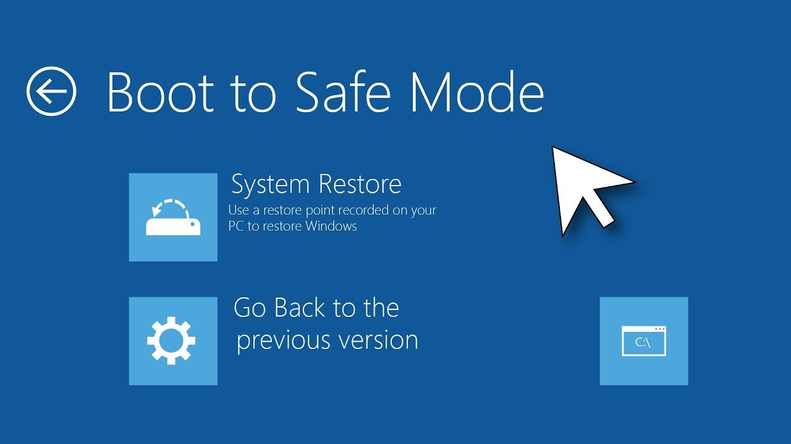
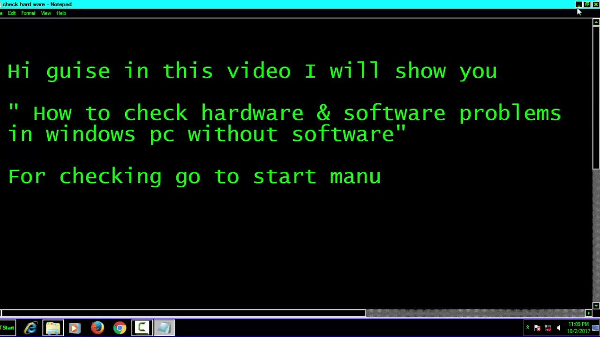
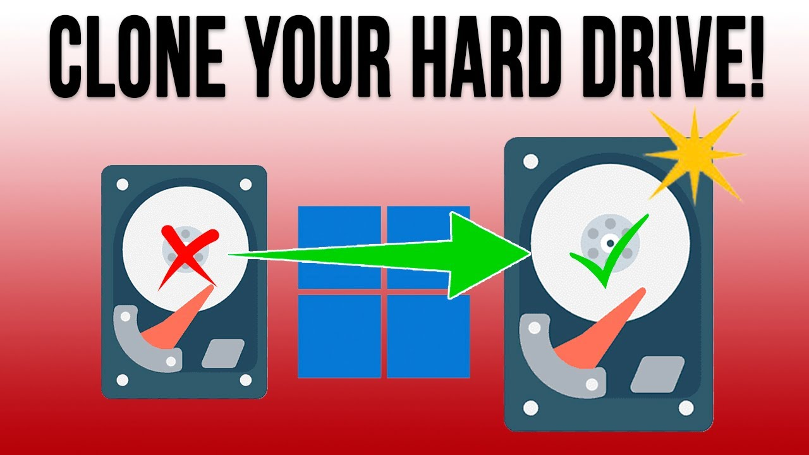
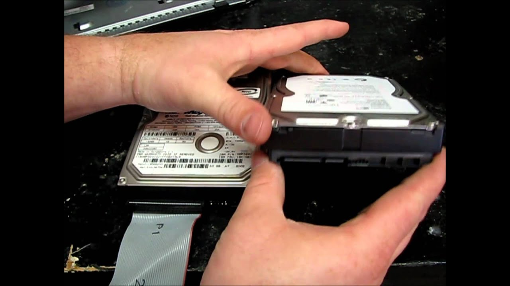
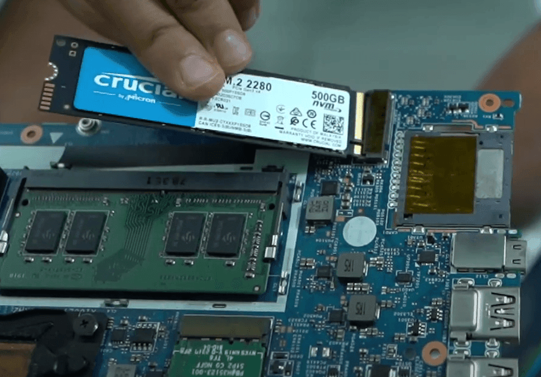

If your hard drive is showing signs of failure, follow these steps to troubleshoot and recover your data:
1. Back Up Your Data (If Possible)
Immediately back up: If your hard drive is still accessible but showing signs of failure (e.g., strange noises, frequent crashes, or slow performance), back up your important files as soon as possible to an external drive or cloud storage.
Use a bootable USB drive: If your laptop won’t boot, try using a bootable USB drive with a recovery tool (like a Linux live USB) to access the hard drive and copy your files.
2. Check for Physical Issues
Listen for unusual noises: Clicking, grinding, or beeping sounds from the hard drive are often signs of mechanical failure. In this case, it's best to stop using the drive to avoid further damage.
Check connections: If you’re comfortable opening your laptop, check that the hard drive’s connections are secure. Loose cables or connectors can cause the drive to malfunction.
3. Try Safe Mode or Boot from an External Drive
Boot in Safe Mode: If your laptop crashes frequently, try booting it in Safe Mode to see if the hard drive performs better without additional software running. This can sometimes allow you to back up files.
Boot from a live USB or external drive: If the internal drive is failing, you can boot the laptop from an external drive (such as a USB with a live operating system like Linux) and access the data on the internal hard drive for recovery.

4. Check for Software Issues
Run antivirus/malware scans: Sometimes, malware can cause the hard drive to malfunction. Run a thorough scan to remove any potential threats.
Check for file system errors: Corrupted file systems can make the drive seem like it’s failing. Tools like CHKDSK or file system repair utilities can help resolve this.

5. Clone the Failing Drive
Clone the drive: If the hard drive is showing signs of failure but is still accessible, use disk cloning software (e.g., Clonezilla or Macrium Reflect) to clone the entire hard drive to a new one. This allows you to recover your data without losing anything.

6. Replace the Hard Drive
Backup, then replace: If the drive has failed or is near failure, and you've backed up your data, the best solution is to replace the hard drive.
Install a new drive: You can either replace the hard drive with a new HDD (hard disk drive) or upgrade to an SSD (solid-state drive) for better performance.
Reinstall the OS: Once the new drive is installed, you will need to reinstall your operating system and restore your data from the backup.

7. Consult a Professional
Data recovery service: If the drive is completely inaccessible, and you have critical data on it, consult a professional data recovery service. They have specialized tools and equipment to recover data from failed drives.
8. Use a Cloud Backup Solution (Preventive Measure)
Set up automatic backups: To prevent data loss in the future, regularly back up your files to the cloud or an external hard drive. Services like Google Drive, OneDrive, or Dropbox can automatically back up your important data.
9. Use an SSD (Upgrade Option)
Upgrade to SSD: If replacing your hard drive, consider upgrading to an SSD (solid-state drive). SSDs are faster, more reliable, and less prone to physical damage since they have no moving parts compared to traditional HDDs.

By following these steps, you can often recover your data or fix a malfunctioning hard drive. If the hard drive is completely dead, replacement is typically the only solution.